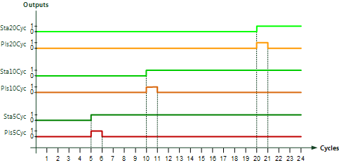

[AS_STTUP] Startup information of automation station
Function block AS_STTUP allows for targeted control and release of the application start up in the automation station.
AS_STTUP allows for targeted control and release of the application startup in the automation station.
AS_STTUP provides information for automation station cycles.
- Output [Sta5Cyc] is set to 1 in the 5th cycle of the automation station and remains at 1 during automation.
- Output [Pls5Cyc] provides a pulse with the 5th automation station cycle.
- Outputs [Sta10Cyc], [Pls10Cyc], [Sta20Cyc], and [Pls20Cyc] have the same function for automation station cycles 10 or 20.

Output | Description | Data type | Default value |
|---|---|---|---|
Sta5Cyc | State 5 cycle after startup of automation station | Boolean | 0 |
Pls5Cyc | Pulse 5 cycles after startup of automation station | Boolean | 0 |
Sta10Cyc | State 10 cycle after startup of automation station | Boolean | 0 |
Pls10Cyc | Pulse 10 cycles after startup of automation station | Boolean | 0 |
Sta20Cyc | State 20 cycle after startup of automation station | Boolean | 0 |
Pls20Cyc | Pulse 20 cycles after startup of automation station | Boolean | 0 |
AS_STTUP is used when specific actions are required upon automation station startup:
- Waiting for data that may not immediately be available upon automation startup.
- Avoiding competition among actions during startup, e.g., for priorities.
- Actions specific to startup after automation station startup.

The various outputs can be used in any manner as per the application.